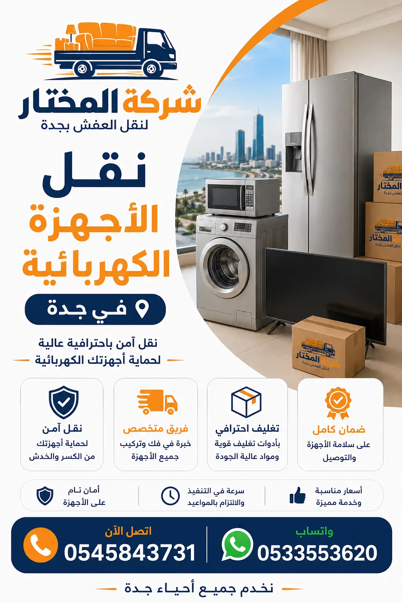

الدليل الشامل لـ نقل الأجهزة الكهربائية بجدة بأمان واحترافية
تُعتبر الأجهزة الكهربائية من أهم وأغلى محتويات المنزل والمكتب، ولذلك فإن نقل الأجهزة الكهربائية بجدة يتطلب عناية خاصة وخبرة عالية. سواء كنت تنتقل إلى منزل جديد، أو تشتري أجهزة مستعملة، أو تحتاج إلى إرسال جهاز للصيانة، فإن نقل الأجهزة الكهربائية بطريقة آمنة يحمي استثمارك ويوفر عليك تكاليف الإصلاح الباهظة. في شركة المختار، ندرك أن الأجهزة مثل الثلاجات والغسالات والمكيفات والأفران تحتوي على قطع حساسة قد تتلف بسهولة إذا لم يتم التعامل معها بشكل صحيح. لذلك، نقدم خدمات متكاملة تشمل تغليف الأجهزة الكهربائية، والفك والتركيب، والنقل باستخدام سيارات مجهزة، وضمان سلامة الجهاز بعد النقل.
عند الحديث عن نقل الثلاجات بجدة، فإن التحدي الأكبر هو الحفاظ على غاز التبريد وضمان عدم انسكاب الزيت من الضاغط. أما نقل الغسالات بجدة فله متطلبات خاصة مثل تثبيت الحوض الداخلي لمنع تلفه أثناء النقل. ونقل المكيفات بجدة يتطلب شفط الغاز وفك المواسير النحاسية بدقة. نحن نمتلك الخبرة والفريق المدرب للتعامل مع جميع هذه التحديات. سيارات نقل مجهزة لدينا تحتوي على أنظمة تثبيت خاصة وممتصات صدمات تضمن وصول أجهزتك سليمة.

نقدم لك جدولاً تقريبياً لـ تكلفة نقل الأجهزة الكهربائية بجدة حسب نوع الجهاز. هذه الأسعار تقريبية وقد تختلف حسب المسافة وحجم الجهاز والخدمات المطلوبة مثل الفك والتركيب والتغليف الاحترافي.
| نوع الجهاز | النطاق السعري التقريبي | ملاحظات |
|---|---|---|
| ثلاجة صغيرة (سعة 10-15 قدم) | 80 - 150 ريال | نقل داخل جدة مع تغليف أساسي |
| ثلاجة كبيرة (سعة 20 قدم فأكثر) | 150 - 300 ريال | تحتاج إلى عربة نقل مجهزة |
| غسالة أوتوماتيكية | 100 - 200 ريال | تثبيت الحوض الداخلي ضروري |
| غسالة نصف أوتوماتيك | 80 - 150 ريال | أخف وزناً وأسهل في النقل |
| مكيف سبليت (وحدة واحدة) | 150 - 300 ريال | يشمل شفط الغاز والفك |
| مكيف شباك | 100 - 200 ريال | نقل بسيط مع تغليف |
| مكيف أرضي (مركزي) | 300 - 500 ريال | ثقيل ويتطلب عمالة إضافية |
| فرن كهربائي / غاز | 100 - 200 ريال | تغليف الزجاج والباب ضروري |
| غسالة صحون | 150 - 250 ريال | تحتاج إلى تثبيت داخلي |
| تلفزيون شاشة مسطحة (55 بوصة) | 100 - 200 ريال | تغليف خاص للشاشة الحساسة |
| أجهزة صوتية وكومبيوتر | 50 - 150 ريال | تغليف مضاد للكهرباء الساكنة |
الأسعار المذكورة هي نطاقات تقريبية لنقل جهاز واحد داخل جدة. قد تختلف الأسعار حسب حالة الجهاز والمسافة وخدمة الفك والتركيب والتغليف. ننصح بطلب معاينة مجانية للحصول على سعر دقيق.
للجهاز الواحد
للجهاز الواحد مع الخدمات
تختلف تكلفة نقل الأجهزة الكهربائية بجدة بناءً على عدة عوامل رئيسية. كلما زاد تعقيد عملية النقل، زادت التكلفة، ولكن مع شركة المختار تحصل على قيمة حقيقية مقابل كل ريال تدفعه.
الأجهزة الكبيرة والثقيلة مثل الثلاجات الكبيرة والمكيفات المركزية تتطلب عمالة إضافية وسيارات خاصة، مما يزيد من تكلفة نقل الأجهزة.
تغليف الأجهزة الكهربائية بمواد عالية الجودة مثل البلاستيك الفقاعي والكرتون المقوى يضيف إلى التكلفة ولكنه يحمي جهازك بشكل أفضل.
فك وتركيب الأجهزة مثل المكيفات والغسالات يتطلب وقتاً وجهداً إضافياً، خاصة إذا كانت موصولة بالسباكة أو الكهرباء.
المسافة بين موقعك القديم والجديد تؤثر على سعر نقل الأجهزة بجدة. النقل لمسافات طويلة داخل جدة قد يكلف أكثر.
نقل الأجهزة عبر الدرج في الأدوار العليا يستغرق وقتاً وجهداً أكبر، مما يزيد من التكلفة مقارنة بالأدوار الأرضية أو التي بها مصعد.
تقديم ضمان سلامة الأجهزة وتأمين ضد الكسر يضيف إلى التكلفة ولكن يوفر راحة البال.
تغليف الأجهزة الكهربائية هو الخطوة الأهم لضمان وصولها سليمة. إليك نصائحنا الاحترافية:
أخطاء تغليف الأجهزة الكهربائية هي السبب الأول لتلفها أثناء النقل. لا تتردد في طلب خدمة التغليف الاحترافي من فريقنا المدرب.
تختلف تكلفة نقل الأجهزة الكهربائية بجدة قليلاً حسب الحي والموقع. نقدم خدماتنا في جميع أحياء جدة بأسعار تنافسية.
يشمل أحياء: السلامة، النسيم، الثغر، الروابي
يشمل أحياء: الكندرة، المحمدية، الشاطئ، البغدادية
يشمل أحياء: الفيصلية، العزيزية، النخيل
يشمل أحياء: الحمراء، الزهراء، الصفا
نحن في شركة المختار لنقل العفش نقدم خدمات متكاملة لـ نقل الأجهزة الكهربائية بجدة تشمل جميع أنواع الأجهزة المنزلية والإلكترونية. خدمتنا تبدأ من لحظة اتصالك بنا، حيث نقوم بمعاينة الأجهزة وتقييم حالتها، وتقديم عرض سعر شفاف، ثم تحديد موعد مناسب للنقل. يوم النقل، يصل فريقنا المتكون من فنيين متخصصين في فك وتركيب الأجهزة الكهربائية، مع سيارات مجهزة بأنظمة تثبيت متطورة وممتصات صدمات. نقوم بـ تغليف الأجهزة الكهربائية بمواد عالية الجودة (بلاستيك فقاعي 3 طبقات، كراتين مقواة، أغطية قماشية) لضمان حمايتها من الخدوش والصدمات. ثم نقوم بنقلها إلى الموقع الجديد مع مراعاة الحفاظ على وضعها الصحيح (مستقيم للثلاجات، عمودي للشاشات)، وإعادة تركيبها وتوصيلها واختبار تشغيلها. نقدم أيضاً خدمة تخزين الأجهزة الكهربائية في مستودعاتنا المكيفة والمؤمنة لفترات مؤقتة أو طويلة. سواء كنت بحاجة إلى نقل ثلاجات بجدة، أو نقل غسالات بجدة، أو نقل مكيفات بجدة، أو نقل أي جهاز كهربائي آخر، فإن فريقنا المدرب على أعلى مستوى من الاحترافية يضمن لك وصول أجهزتك سليمة 100%. مع شركة المختار، أنت تختار الأمان والجودة والسعر المناسب. اطلب خدمات نقل الأجهزة الكهربائية في جدة الآن واحصل على خصم خاص للطلبات المتعددة. نستخدم أحدث تقنيات النقل والتغليف، ونواكب التطورات في عالم الأجهزة الكهربائية وأنواعها المختلفة، لضمان تقديم خدمة متطورة تلبي احتياجاتك. كما نقدم استشارات مجانية حول أفضل طريقة لنقل كل جهاز حسب نوعه وحالته، لضمان عدم تعرضه لأي تلف أثناء عملية النقل.
نقل الثلاجات بجدة من أكثر الخدمات طلباً، وتعتبر الثلاجة من الأجهزة المنزلية الأغلى والأكثر حساسية. تحتوي الثلاجة على غاز تبريد وضاغط وزيت، وأي ميلان أو انقلاب أثناء النقل قد يتسبب في أضرار جسيمة. لذلك، نتبع بروتوكولاً دقيقاً عند نقل الثلاجات والمجمدات، يبدأ بتفريغ الثلاجة من الطعام قبل 24 ساعة، ثم تنظيفها وتجفيفها، ثم فصل الكهرباء وتركها لمدة ساعتين لاستقرار الضاغط. نقوم بعد ذلك بتثبيت الأبواب بشريط لاصق، وتغليف الهيكل الخارجي بالبلاستيك الفقاعي والأغطية الواقية، ثم تحميلها على السيارة في وضع مستقيم تماماً باستخدام رافعة يدوية لمنع أي ميلان. نربط الثلاجة جيداً باستخدام أحزمة تثبيت قوية لمنع حركتها أثناء النقل. عند الوصول إلى الموقع الجديد، ننزل الثلاجة بحذر ونضعها في المكان المحدد، ثم نتركها لمدة 4 ساعات قبل توصيلها بالكهرباء للسماح للزيت بالعودة إلى مكانه. نقدم ضماناً كاملاً على نقل الثلاجات بجدة معنا، ونتحمل مسؤولية أي تلف يحدث بسبب خطأ من فريقنا. نقل أجهزة الفلل والمنازل لدينا يشمل الثلاجات الكبيرة بأنواعها (أمريكية، فرنسية، Side by Side). يمكنك أيضاً الاستفادة من خدمة تخزين الثلاجات إذا كنت بحاجة لفترة تخزين مؤقتة. ننصحك دائماً بالاستعانة بشركة متخصصة في نقل الأجهزة الكهربائية بجدة لتجنب المخاطر، حيث أن محاولة نقل الثلاجة بنفسك قد تؤدي إلى تلف الضاغط أو تسرب الغاز، مما يكلفك مبالغ كبيرة للإصلاح. شركة المختار توفر لك راحة البال وسلامة أجهزتك.
نقل الغسالات بجدة يتطلب معرفة دقيقة بطريقة تثبيت الحوض الداخلي. الغسالات الأوتوماتيكية تحتوي على حوض داخلي متحرك مثبت بزنبركات، وإذا لم يتم تثبيته قبل النقل، فقد يتلف الهيكل الداخلي للغسالة. لذلك، قبل نقل الغسالات الأوتوماتيكية، نقوم بفك براغي التثبيت الخاصة بالحوض، أو استخدام لفافات تثبيت إذا كانت البراغي مفقودة. ثم نغلق باب الغسالة ونثبته بشريط لاصق، ونفصل خراطيم الماء والصرف، ونتأكد من إفراغ الغسالة تماماً من الماء. نغلف الغسالة بغطاء بلاستيكي مقاوم للماء لحمايتها من الأتربة، ثم ننقلها في وضع مستقيم. أما نقل الغسالات النصف أوتوماتيك فهو أقل تعقيداً، حيث يمكن نقلها في أي وضع، ولكننا نفضل دائماً وضعها مستقيماً للحفاظ على سلامتها. نقدم أيضاً خدمة فك وتركيب الغسالات في الموقع الجديد، مع توصيل خراطيم الماء والصرف واختبار تشغيل الغسالة للتأكد من عملها بكفاءة. نقل الغسالات بجدة مع شركة المختار يضمن لك وصول غسالتك بحالة ممتازة، مع ضمان شامل على سلامتها. ننصحك بتفريغ الغسالة من الملابس قبل يوم من النقل، وإزالة أي أغراض عالقة في الحوض، لتسهيل عملية النقل وتجنب أي أضرار. نصائح نقل الأجهزة الكهربائية تجدها في مدونتنا، والتي تغطي جميع جوانب النقل الآمن.
نقل المكيفات بجدة من الخدمات الأكثر تعقيداً والتي تتطلب خبرة فنية عالية. سواء كنت بحاجة إلى نقل مكيفات سبليت أو نقل مكيفات شباك أو نقل مكيفات أرضية أو مركزية، فإن فريقنا المتخصص من فنيي التبريد والتكييف هو الحل الأمثل. عند نقل المكيفات السبليت، نقوم أولاً بشفط غاز التبريد (الفريون) باستخدام جهاز خاص، وتخزينه في أسطوانة معقمة، ثم نفصل المواسير النحاسية والأسلاك الكهربائية، ونغلق أطراف المواسير لمنع دخول الأتربة. ثم نفك الوحدة الداخلية من الحائط والوحدة الخارجية من مكانها، ونغلف كل وحدة على حدة بالبلاستيك الفقاعي والأغطية الواقية. ننقل المكيفات في سيارات مجهزة بأنظمة تثبيت خاصة تمنع اهتزازها أثناء النقل. عند الوصول إلى الموقع الجديد، نقوم بتركيب الوحدات في الأماكن المحددة، وتوصيل المواسير النحاسية، وإعادة شحن غاز التبريد، وفحص ضغط النظام، والتأكد من عدم وجود تسريبات، واختبار تشغيل المكيف للتأكد من كفاءته. أما نقل مكيفات الشباك فهو أقل تعقيداً، حيث نقوم بفك المكيف من الشباك وتغليفه ونقله وتركيبه في الموقع الجديد. نقدم أيضاً خدمة نقل المكيفات بجدة كخدمة منفصلة أو ضمن باقة نقل الأجهزة المتكاملة. نضمن لك وصول مكيفك بحالة ممتازة وكفاءة تبريد عالية.
نقل الأفران والمواقد بجدة يتطلب حذراً خاصاً نظراً لاحتوائها على أجزاء زجاجية (الباب) ومواد حساسة للصدمات. سواء كنت تنقل فرن كهربائي، أو فرن غاز، أو موقد غاز، فإننا نتبع إجراءات دقيقة لضمان سلامته. أولاً، نقوم بفصل الفرن عن مصدر الكهرباء أو الغاز، ثم نقوم بتنظيفه وإزالة أي بقايا طعام. نغلق باب الفرن بشريط لاصق لمنع فتحه أثناء النقل، ونضع طبقات من البلاستيك الفقاعي على الباب الزجاجي لحمايته من الكسر. نغلف الهيكل الخارجي بغطاء قماشي أو بلاستيكي، ونثبته في السيارة باستخدام أحزمة تثبيت. نقل الفرن في وضع مستقيم هو الأفضل لمنع تلف الأجزاء الداخلية. أما المواقد الغازية، فنفصل خرطوم الغاز ونغلق المنافذ بإحكام، ثم ننقلها بعناية. نقدم خدمة نقل مطابخ جدة التي تشمل الأفران والمواقد المدمجة، حيث نقوم بفكها وتركيبها بدقة. تغليف الأفران الزجاجية يتم بطبقتين من البلاستيك الفقاعي وزوايا كرتونية لحماية الزوايا. نحرص على استخدام مواد تغليف عالية الجودة تناسب وزن وحجم الفرن، ونقدم ضماناً على سلامته أثناء النقل. أفضل طريقة لنقل الأفران ننصح بها دائماً عملاءنا: فصل الباب الزجاجي إذا أمكن ونقله بشكل منفصل لتجنب كسره.
نقل الأجهزة الإلكترونية الحساسة مثل التلفزيونات، وأجهزة الكومبيوتر، وأنظمة الصوت، وأجهزة الألعاب، يتطلب عناية فائقة. هذه الأجهزة تحتوي على قطع إلكترونية دقيقة قد تتلف بفعل الصدمات أو الكهرباء الساكنة. لذلك، نستخدم مواد تغليف مضادة للكهرباء الساكنة مثل الأكياس المخصصة ESD، ونغلف الجهاز بعدة طبقات من البلاستيك الفقاعي قبل وضعه في صندوق كرتوني مقوى. نضع ملصقات "هش" و"جهة علوية" على جميع جهات الصندوق، وننقلها في سيارات مجهزة بأنظمة تعليق متطورة تمتص الصدمات. نحرص على حمل الأجهزة الإلكترونية في وضعها الصحيح (عمودياً للشاشات، أفقياً للأجهزة المكتبية) وعدم وضع أي شيء فوقها أثناء النقل. نقوم أيضاً بتفريغ الشحنات الكهربائية من الأجهزة قبل تغليفها باستخدام أدوات خاصة. نقل مكاتب وشركات يتضمن غالباً نقل أجهزة حساسة مثل الخوادم وأجهزة الشبكات، ولدينا الخبرة الكافية للتعامل معها. ننصح عملاءنا بحفظ الصناديق الأصلية للأجهزة الإلكترونية، ولكننا نوفر صناديق بديلة عالية الجودة إذا لزم الأمر. نقل الشاشات المسطحة يتم باحترافية عالية، حيث نستخدم زوايا كرتونية لحماية الحواف، وطبقات فوم عازلة. نضمن وصول أجهزتك الإلكترونية سليمة تماماً، مع ضمان شامل يغطي أي تلف نادر قد يحدث أثناء النقل.
نقل الأجهزة الكهربائية بين المدن من جدة إلى الرياض، الدمام، مكة، المدينة، أو أي مدينة أخرى، يتطلب تخطيطاً خاصاً وتجهيزات إضافية لضمان وصول الأجهزة سليمة. الرحلات الطويلة تعرض الأجهزة لاهتزازات وصدمات أكثر من النقل داخل المدينة، لذا نستخدم شاحنات مجهزة بأنظمة تعليق هوائية تقلل الاهتزازات، وأحزمة تثبيت قوية تمنع حركة الأجهزة أثناء السفر. نقوم بتغليف الأجهزة بمواد أكثر سمكاً (بلاستيك فقاعي 5 طبقات، صناديق خشبية للأجهزة الثقيلة) ونستخدم مواد حشو إضافية داخل الصناديق. نخصص سائقين اثنين للرحلات الطويلة للتناوب على القيادة وضمان الوصول الآمن، مع مراقبة درجة حرارة الشاحنة للحفاظ على الأجهزة الحساسة للحرارة. نقل أجهزة من جدة للرياض هو من أكثر الطلبات شيوعاً، وتبلغ المسافة حوالي 950 كم، وتستغرق الرحلة حوالي 10-12 ساعة مع فترات راحة. نقل أجهزة من جدة للدمام مسافة 1,350 كم، تتطلب تخطيطاً دقيقاً وتجهيزات إضافية. نقل الأجهزة بين المدن مع شركة المختار يعني أن أجهزتك في أيدٍ أمينة، مع ضمان شامل يغطيها طوال الرحلة. نقدم أيضاً خدمة التتبع المباشر للشحنة عبر تطبيقنا، لتتمكن من متابعة أجهزتك لحظة بلحظة. شركة نقل أجهزة بين جدة والرياض هي خيارك الأمثل للنقل الآمن بين المدن.
تعتبر تكلفة نقل الأجهزة الكهربائية بجدة من الأمور التي تشغل بال الكثير من العملاء. في شركة المختار، نؤمن بالشفافية التامة في التسعير، ونقدم لك تفصيلاً دقيقاً للتكاليف. تتكون تكلفة نقل الأجهزة من ثلاثة مكونات رئيسية: 1- تكلفة النقل الأساسية، وتشمل تحميل الجهاز، نقله، وتنزيله في الموقع الجديد. 2- تكلفة التغليف، وتختلف حسب نوع الجهاز وحجمه وجودة المواد المستخدمة. 3- تكلفة الفك والتركيب، وتشمل فك الجهاز من مكانه، فصله عن الكهرباء والسباكة، وإعادة تركيبه وتوصيله في الموقع الجديد. على سبيل المثال، سعر نقل ثلاجة كبيرة بجدة يتراوح بين 150 و 300 ريال حسب المسافة، وإضافة التغليف الاحترافي يضيف 50-100 ريال، والفك والتركيب يضيف 50-150 ريال. أما سعر نقل غسالة بجدة فيتراوح بين 100 و 200 ريال، مع إضافة 30-80 ريال للتغليف، و50-100 ريال للفك والتركيب. سعر نقل مكيف بجدة يتراوح بين 150 و 300 ريال للسبليت، و100-200 ريال للشباك، مع إضافة شفط الغاز وشحنه (100-200 ريال إضافية). نقدم عروضاً خاصة لنقل أكثر من جهاز في نفس الرحلة، حيث يمكنك الحصول على خصم يصل إلى 20% على التكلفة الإجمالية. كما نقدم خدمة المعاينة المجانية لتقديم عرض سعر دقيق وموثق، بدون أي التزام من جانبك. كم تكلفة نقل الأجهزة في جدة؟ اتصل بنا لتعرف الإجابة الدقيقة حسب احتياجاتك.
قبل أن تبدأ عملية نقل الأجهزة الكهربائية بجدة، هناك عدة نصائح مهمة يجب اتباعها لضمان سلامة أجهزتك وتسهيل عملية النقل. أولاً، قم بإعداد الأجهزة للنقل: أفرغ الثلاجة من الطعام قبل 24 ساعة، وأفرغ الغسالة من الملابس والماء، وافصل جميع الأجهزة عن الكهرباء والماء. ثانياً، نظف الأجهزة جيداً واتركها تجف، فهذا يمنع تكون العفن والروائح الكريهة أثناء النقل. ثالثاً، احتفظ بأدلة المستخدم وقطع الغيار والبراغي في كيس واحد مخصص، واكتب عليها اسم الجهاز لتسهيل عملية التركيب. رابعاً، قم بقياس الأبواب والممرات في منزلك الجديد للتأكد من أن الأجهزة يمكن أن تمر بسهولة، وأبلغ فريق النقل بأي عوائق محتملة. خامساً، اختر شركة نقل متخصصة مثل شركة المختار لنقل الأجهزة الكهربائية التي تمتلك الخبرة والفريق المدرب والعتاد المناسب. سادساً، تأكد من وجود تأمين يغطي الأجهزة أثناء النقل، واحصل على عرض سعر مكتوب وواضح يشمل جميع الخدمات المطلوبة. سابعاً، قم بتصوير الأجهزة قبل النقل للاحتفاظ بسجل لحالتها، وهذا يساعد في حال حدوث أي نزاع حول الأضرار. نصائح نقل الأجهزة الكهربائية تجدها مفصلة في مدونتنا، وتشمل كل ما تحتاج معرفته قبل يوم النقل. اتباع هذه النصائح يضمن لك عملية نقل سلسة وخالية من المشاكل، ويوفر عليك الوقت والجهد والتكاليف الإضافية.
تتساءل لماذا تختار شركة المختار لنقل الأجهزة الكهربائية بين العديد من الشركات في جدة؟ إليك الأسباب التي تجعلنا الخيار الأفضل. أولاً، خبرتنا الطويلة التي تتجاوز 15 عاماً في مجال نقل الأجهزة الكهربائية والأثاث، مما يعطينا فهم عميق لاحتياجات العملاء وتحديات النقل المختلفة. ثانياً، فريقنا المتخصص من فنيي التبريد والتكييف والكهربائيين المدربين على أعلى مستوى، والذين يمتلكون المعرفة التقنية للتعامل مع جميع أنواع الأجهزة والماركات. ثالثاً، أسطولنا الحديث من السيارات المجهزة بأنظمة تثبيت متطورة وممتصات صدمات، والتي تضمن وصول أجهزتك بأمان. رابعاً، مواد التغليف عالية الجودة التي نستخدمها (بلاستيك فقاعي 5 طبقات، صناديق خشبية، أغطية مقاومة للماء) والتي توفر حماية فائقة. خامساً، أسعارنا التنافسية والشفافة بدون أي تكاليف خفية، مع خصومات للطلبات المتعددة والعملاء الدائمين. سادساً، ضماننا الشامل على سلامة الأجهزة لمدة 3 أشهر، وتأمين يصل إلى 10,000 ريال ضد أي ضرر نادر. سابعاً، خدمة العملاء الممتازة التي نقدمها، حيث نستمع لاحتياجاتك ونقدم لك الحلول المناسبة. ثامناً، التزامنا الدقيق بالمواعيد واحترام وقت العميل، حيث نصل في الوقت المحدد وننهي العمل في الإطار الزمني المتفق عليه. أفضل شركات نقل الأجهزة في جدة تصنفنا في المرتبة الأولى. تاسعاً، نقدم خدمة ما بعد النقل، حيث نتابع معك للتأكد من رضاك عن الخدمة وأداء الأجهزة. وأخيراً، سمعتنا الطيبة التي بنيناها على مدى سنوات من العمل الجاد والإخلاص، والتي جعلتنا الخيار الأول للآلاف من العملاء في جدة. اختر شركة المختار، وستحصل على أفضل خدمة نقل الأجهزة الكهربائية بجدة مع راحة بال تامة.
أبو خالد
نقل ثلاجة وغسالة - حي الحمدانية
"تعاقدت مع شركة المختار لنقل ثلاجتي الكبيرة وغسالتي الأوتوماتيكية من حي الحمدانية إلى حي الشاطئ. الفريق كان ممتازاً، وصلوا في الوقت المحدد، وغلفوا الأجهزة باحترافية، ونقلوها وتركبوها في المنزل الجديد. الثلاجة والغسالة يعملان بكفاءة عالية. أنصح الجميع بهذه الشركة."
أبو عبدالله
نقل 3 مكيفات - حي النخيل
"نقلنا 3 مكيفات سبليت من منزلنا القديم إلى الجديد. شركة المختار قامت بشفط الغاز وفك المكيفات وتغليفها ونقلها وتركيبها في المنزل الجديد خلال 4 ساعات فقط. جميع المكيفات تعمل بشكل ممتاز. أسعارهم مناسبة جداً مقارنة بالخدمة الممتازة التي قدموها."
أبو محمد
نقل أجهزة مكتب - حي الصفا
"نقلنا مكاتب شركتنا وكان لدينا أجهزة حساسة مثل الخوادم والشاشات. شركة المختار تعاملت معها باحترافية عالية، واستخدموا مواد تغليف مضادة للكهرباء الساكنة. جميع الأجهزة وصلت سليمة وتعمل بكفاءة. فريقهم محترف جداً وأسعارهم شفافة. شكراً لكم."
أبو فيصل
نقل أجهزة من جدة للرياض
"نقلت أجهزة منزلي من جدة إلى الرياض مع شركة المختار. كانت الرحلة طويلة ولكن الأجهزة وصلت بحالة ممتازة بفضل التغليف الممتاز والسيارة المجهزة. الفريق كان على تواصل معي طوال الرحلة وقدموا خدمة ممتازة. أنصح بهم بشدة لنقل الأجهزة بين المدن."
تختلف أسعار نقل الأجهزة الكهربائية حسب نوع الجهاز وحجمه والمسافة، وتتراوح بين 50-400 ريال للجهاز الواحد. اتصل بنا للحصول على عرض سعر مجاني.
يتم إفراغ الثلاجة وتنظيفها وتجفيفها، ثم تغليفها بالبلاستيك الفقاعي والأغطية الواقية وتثبيتها في السيارة في وضع مستقيم.
نعم، ننقل جميع أنواع الغسالات والمكيفات مع الفك والتركيب والتغليف الاحترافي وشفط الغاز للمكيفات.
نعم، نقدم تأميناً شاملاً على جميع الأجهزة الكهربائية أثناء النقل ضد الكسر والتلف يصل إلى 10,000 ريال.
تستغرق عملية نقل المكيف السبليت حوالي ساعة إلى ساعتين تشمل شفط الغاز والفك والنقل والتركيب والشحن.
نعم، نوفر خدمة فك وتركيب جميع الأجهزة الكهربائية بواسطة فنيين متخصصين، مع ضمان إعادة التركيب بشكل صحيح.
نعم، نقدم خدمة نقل الأجهزة الكهربائية بين المدن إلى جميع مدن المملكة بشاحنات مجهزة للرحلات الطويلة.
يتم تثبيت الحوض الداخلي ببراغي التثبيت، وتغليف الغسالة، ونقلها في وضع مستقيم، وإعادة تركيبها وتوصيلها.
نعم، نوفر خدمة تخزين الأجهزة الكهربائية في مستودعات مكيفة ومؤمنة بأسعار تنافسية تبدأ من 300 ريال شهرياً.
يمكنك الاتصال بنا على 0561110020 أو عبر واتساب 0561110020 للحصول على معاينة مجانية وعرض سعر دقيق.
ليس إجبارياً ولكن ننصح به بشدة لأنه يحمي أجهزتك من الخدوش والصدمات ويضمن وصولها سليمة.
ننقل جميع الأجهزة الكهربائية: ثلاجات، غسالات، مكيفات، أفران، شاشات، أجهزة كمبيوتر، أجهزة صوتية، وأجهزة منزلية أخرى.
نعم، نقدم خدمة نقل الأجهزة من وإلى مراكز الصيانة بأسعار مناسبة وسريعة.
عادةً تستغرق عملية نقل الأجهزة داخل جدة من ساعة إلى 3 ساعات حسب عدد الأجهزة والمسافة.
نعم، نقدم خصومات تصل إلى 20% للطلبات التي تشمل أكثر من 3 أجهزة، وللعملاء الدائمين والعملاء الجدد.
احصل على عرض سعر مجاني وشامل من شركة متخصصة في نقل الأجهزة الكهربائية بجدة مع ضمان سلامة أجهزتك.
📞 اتصل بنا
ناقش تفاصيل نقل أجهزتك
📍 معاينة مجانية
نقيم أجهزتك مجاناً
📝 عرض مفصل
سعر شفاف ومفصل
✅ تأكيد الخدمة
نحدد موعد النقل المناسب
أسعار شفافة - تغليف احترافي - ضمان سلامة الأجهزة